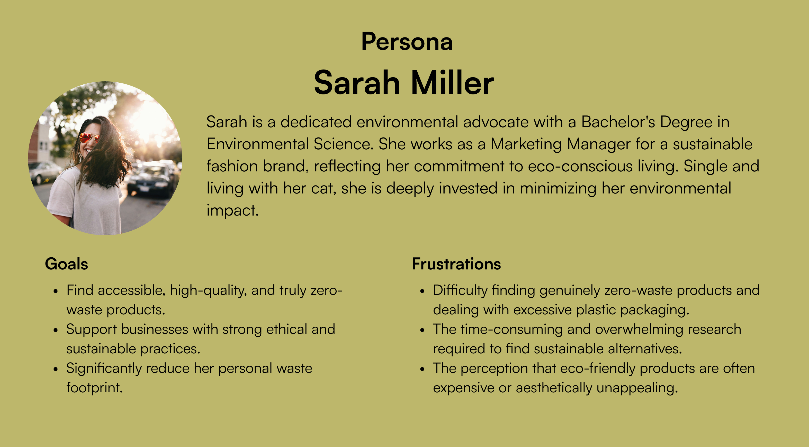
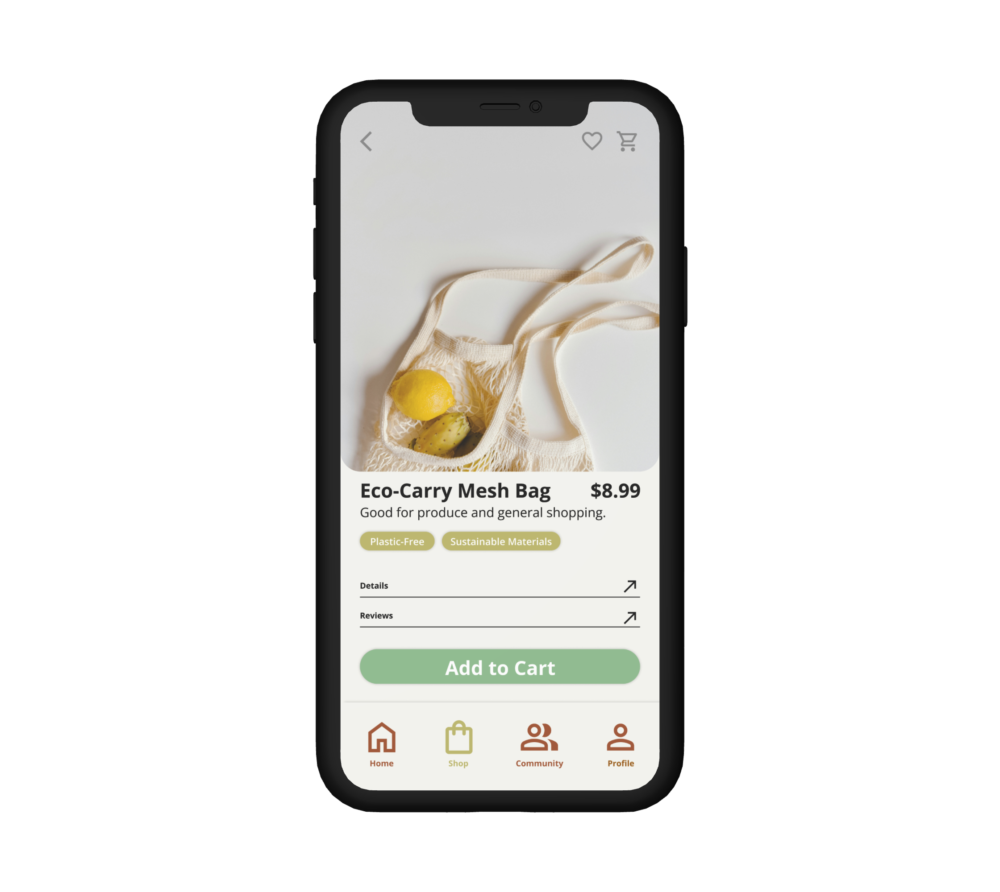
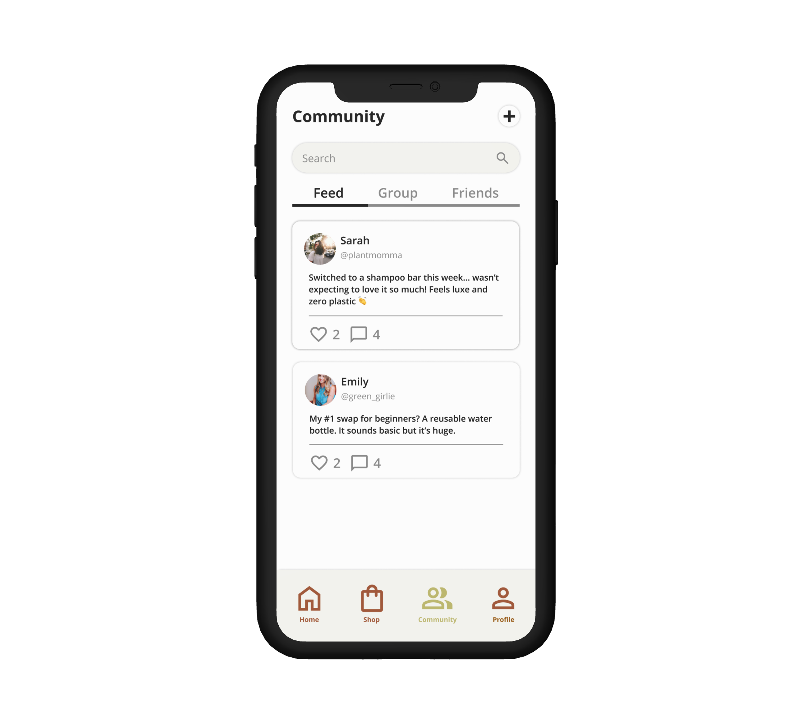

PROBLEM
Sustainable Living, Complicated Shopping.
Imagine wanting to make a difference, to shop sustainably, but being met with a maze of confusing labels and overwhelming choices. It's frustrating, isn't it? That's the feeling many eco-conscious consumers experience when trying to navigate the world of sustainable shopping.
RESEARCH & ANALYSIS
Passionate Environmentalist, Seeking Solutions

COMPETITIVE ANALYSIS
Lacking Clarity, Information, and Community.
I analyzed existing sustainable shopping apps and identified key areas for improvement, such as:
- Cluttered interfaces and confusing navigation.
- Lack of clear and concise product information.
- Limited community features and engagement opportunities.
SOLUTION
Ethical Shopping, Clearly Defined.
Our solution was UnBoxed, a mobile application designed to simplify sustainable shopping through personalization and community. As the lead Product Designer, I focused on creating an intuitive user experience that prioritized transparency and trust. The app features:

Transparent Product Information
- Clear details on certifications, materials, and ethical sourcing.

Community Forum
- A space for users to share reviews, tips, and connect with like-minded individuals.

Streamlined Checkout
- An efficient process that minimizes friction.

POTENTIAL IMPACT
Streamlining the Path to Sustainable Living.
- Empowered Consumers: The app aims to empower consumers to make informed and sustainable choices by providing them with the tools and information they need.
- Increased Adoption of Sustainable Products: By simplifying the shopping experience and building trust, the app has the potential to increase the adoption of sustainable products.
- Fostering a Community: The community forum will create a sense of belonging and encourage users to support each other on their sustainability journeys.
- Reduced Environmental Impact: By promoting sustainable consumption and supporting eco-conscious businesses, the app can contribute to a more sustainable future.
LEARNINGS
Designing for Sustainability.
This conceptual project has allowed me to explore the challenges and opportunities in designing for sustainable living. I learned the importance of user-centered design and the value of creating intuitive and accessible interfaces. In the future, I would like to further explore the potential of gamification and personalized recommendations to enhance user engagement and drive behavior change.